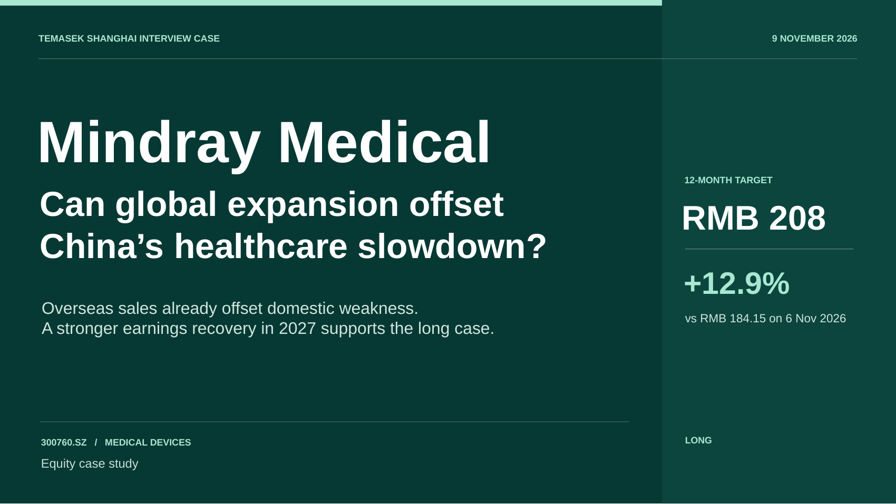
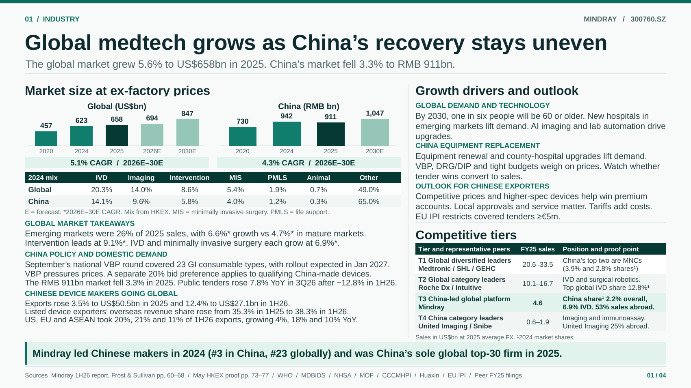
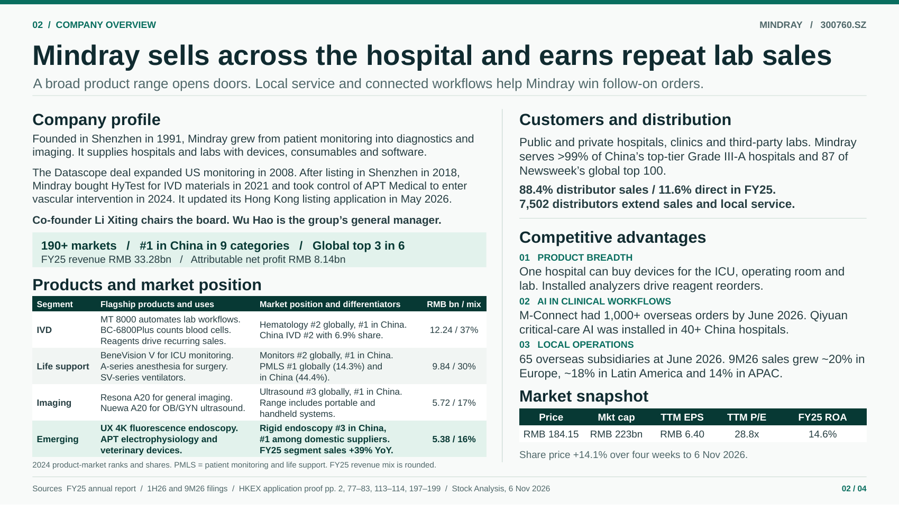
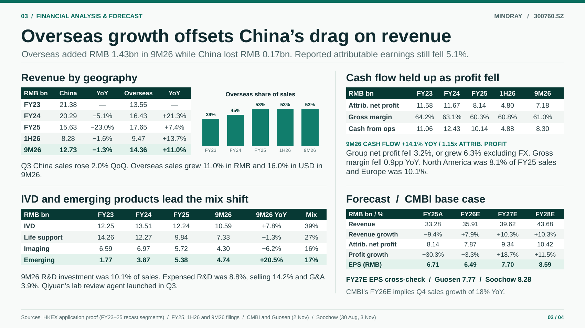
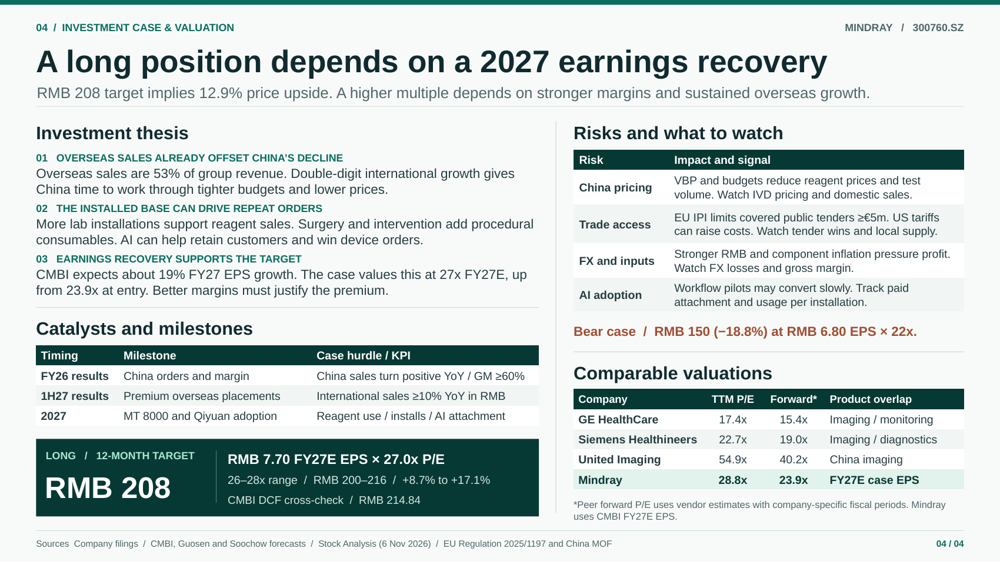

Industry
Global medtech grows as China’s recovery stays uneven
The global market grew 5.6% to US$658bn in 2025. China’s market fell 3.3% to RMB 911bn.
Global medical device market
US$bn · ex-factory prices
2020 与 2024 可查港交所申请稿正文 p. 73。2025、2026E、2030E 和 CAGR 见半年报 p. 65 图。 迈瑞医疗 2026 半年报 pp. 65–68 · 港交所申请稿 · 行业概览 pp. 72–77
China medical device market
RMB bn · ex-factory prices
2020、2025、2030E 和 CAGR 见半年报 p. 66 正文。2024 的 941.7 见港交所申请稿 p. 73 中国市场图。CAGR 从 2026E 起算。 迈瑞医疗 2026 半年报 pp. 65–68 · 港交所申请稿 · 行业概览 pp. 72–77
2024 market mix by category
| 2024 mix | IVD | Imaging | Intervention | MIS | PMLS | Animal | Other |
|---|---|---|---|---|---|---|---|
| Global | 20.3% | 14.0% | 8.6% | 5.4% | 1.9% | 0.7% | 49.0% |
| China | 14.1% | 9.6% | 5.8% | 4.0% | 1.2% | 0.3% | 65.0% |
E = forecast. *2026E–30E CAGR. Mix from HKEX. MIS = minimally invasive surgery. PMLS = life support.
按申请稿同一版分类表，以各类别金额除以本市场总额。个别合计差异来自四舍五入。 港交所申请稿 · 行业概览 pp. 72–77
Market takeaways
GLOBAL MARKET TAKEAWAYS
- Emerging markets were 26% of 2025 sales, with 6.6%* growth vs 4.7%* in mature markets.
- Intervention leads at 9.1%*. IVD and minimally invasive surgery each grow at 6.9%*.
地区与细分赛道增速见半年报 pp. 65–68。 迈瑞医疗 2026 半年报 pp. 65–68
CHINA POLICY AND DOMESTIC DEMAND
- September’s national VBP round covered 23 GI consumable types, with rollout expected in Jan 2027.
- VBP pressures prices. A separate 20% bid preference applies to qualifying China-made devices.
- The RMB 911bn market fell 3.3% in 2025. Public tenders rose 7.8% YoY in 3Q26 after −12.8% in 1H26.
招采增速按公开中标口径，来源见 招采与政策。 国家医保局 · 第七批集采 · 财政部 · 本国产品评审优惠
CHINESE DEVICE MAKERS GOING GLOBAL
- Exports rose 3.5% to US$50.5bn in 2025 and 12.4% to US$27.1bn in 1H26.
- Listed device exporters’ overseas revenue share rose from 35.3% in 1H25 to 38.3% in 1H26.
- US, EU and ASEAN took 20%, 21% and 11% of 1H26 exports, growing 4%, 18% and 10% YoY.
出口金额与目的地用海关货值。上市企业海外收入占比来自华鑫证券 / Wind，口径见 出口来源。 中国医保商会 · 2025 年出口 · 中国医保商会 · 2026 上半年出口
Growth drivers and outlook
GLOBAL DEMAND AND TECHNOLOGY
By 2030, one in six people will be 60 or older. New hospitals in emerging markets lift demand. AI imaging and lab automation drive upgrades.
老龄人口数据见 WHO。 WHO · Ageing and health
CHINA EQUIPMENT REPLACEMENT
Equipment renewal and county-hospital upgrades lift demand. VBP, DRG/DIP and tight budgets weigh on prices. Watch whether tender wins convert to sales.
设备更新见国家发改委。 国家发改委 · 设备更新
OUTLOOK FOR CHINESE EXPORTERS
Competitive prices and higher-spec devices help win premium accounts. Local approvals and service matter. Tariffs add costs. EU IPI restricts covered tenders ≥€5m.
欧盟法规见第 1–2 条的适用范围及限制。 欧盟 · 实施条例 2025/1197
Competitive tiers
| Tier and representative peers | FY25 sales | Position and proof point |
|---|---|---|
| T1 Global diversified leaders Medtronic / SHL / GEHC | 20.6–33.5 | China’s top two are MNCs (3.9% and 2.8% shares¹) |
| T2 Global category leaders Roche Dx / Intuitive | 10.1–16.7 | IVD and surgical robotics. Top global IVD share 12.8%¹ |
| T3 China-led global platform Mindray | 4.6 | China share¹ 2.2% overall, 6.9% IVD. 53% sales abroad. |
| T4 China category leaders United Imaging / Snibe | 0.6–1.9 | Imaging and immunoassay. United Imaging 25% abroad. |
Sales in US$bn at 2025 average FX. ¹2024 market shares.
份额见申请稿。公司营收原文与汇率见下方 同业与汇率来源。 港交所申请稿 · 行业概览 pp. 72–77
Mindray led Chinese makers in 2024 (#3 in China, #23 globally) and was China’s sole global top-30 firm in 2025.
2024 年排名见申请稿行业概览，2025 年排名见半年报。 港交所申请稿 · 行业概览 pp. 72–77 · 迈瑞医疗 2026 半年报 pp. 65–68
Company overview
Mindray sells across the hospital and earns repeat lab sales
A broad product range opens doors. Local service and connected workflows help Mindray win follow-on orders.
Company profile
Founded in Shenzhen in 1991, Mindray grew from patient monitoring into diagnostics and imaging. It supplies hospitals and labs with devices, consumables and software.
The Datascope deal expanded US monitoring in 2008. After listing in Shenzhen in 2018, Mindray bought HyTest for IVD materials in 2021 and took control of APT Medical to enter vascular intervention in 2024. It updated its Hong Kong listing application in May 2026.
Co-founder Li Xiting chairs the board. Wu Hao is the group’s general manager.
FY25 revenue RMB 33.28bn / Attributable net profit RMB 8.14bn
沿革见官网，产品排名与财务数据见公司披露。 迈瑞官网 · 公司沿革 · 迈瑞医疗 2025 年报全文 · H 股申请进展公告
Market snapshot
| Price | Mkt cap | TTM EPS | TTM P/E | FY25 ROA |
|---|---|---|---|---|
| RMB 184.15 | RMB 223bn | RMB 6.40 | 28.8x | 14.6% |
Share price +14.1% over four weeks to 6 Nov 2026.
收盘价取 2026-11-06 的 Close 列。TTM EPS 及 FY25 ROA 的计算见 股价与财务指标。 Stock Analysis · 历史收盘价
Customers and distribution
Public and private hospitals, clinics and third-party labs. Mindray serves >99% of China’s top-tier Grade III-A hospitals and 87 of Newsweek’s global top 100.
88.4% distributor sales / 11.6% direct in FY25.
7,502 distributors extend sales and local service.
申请稿选 BUSINESS，查找 distributors 与医院覆盖。 港交所申请稿 · 章节索引
Competitive advantages
01 PRODUCT BREADTH
One hospital can buy devices for the ICU, operating room and lab. Installed analyzers drive reagent reorders.
02 AI IN CLINICAL WORKFLOWS
M-Connect had 1,000+ overseas orders by June 2026. Qiyuan critical-care AI was installed in 40+ China hospitals.
03 LOCAL OPERATIONS
65 overseas subsidiaries at June 2026. 9M26 sales grew ~20% in Europe, ~18% in Latin America and 14% in APAC.
M-Connect 的 1,000+ 为海外签约项目。AI 已落地医院及境外子公司见半年报，区域销售增速见三季报。 迈瑞医疗 2026 半年报 · 迈瑞医疗 2026 三季报
Products and market position
| Segment | Flagship products and uses | Market position and differentiators | RMB bn / mix |
|---|---|---|---|
| IVD | MT 8000 automates lab workflows. BC-6800Plus counts blood cells. Reagents drive recurring sales. | Hematology #2 globally, #1 in China. China IVD #2 with 6.9% share. | 12.24 / 37% |
| Life support | BeneVision V for ICU monitoring. A-series anesthesia for surgery. SV-series ventilators. | Monitors #2 globally, #1 in China. PMLS #1 globally (14.3%) and in China (44.4%). | 9.84 / 30% |
| Imaging | Resona A20 for general imaging. Nuewa A20 for OB/GYN ultrasound. | Ultrasound #3 globally, #1 in China. Range includes portable and handheld systems. | 5.72 / 17% |
| Emerging | UX 4K fluorescence endoscopy. APT electrophysiology and veterinary devices. | Rigid endoscopy #3 in China, #1 among domestic suppliers. FY25 segment sales +39% YoY. | 5.38 / 16% |
2024 product-market ranks and shares. PMLS = patient monitoring and life support. FY25 revenue mix is rounded.
收入结构按港交所申请稿重列分部。2024 年份额、排名见行业概览。产品示例可查迈瑞官网。 港交所申请稿 · 行业概览 pp. 72–77 · 港交所申请稿 · 章节索引 · MT 8000 · BC-6800Plus
Financial analysis & forecast
Overseas growth offsets China’s drag on revenue
Overseas added RMB 1.43bn in 9M26 while China lost RMB 0.17bn. Reported attributable earnings still fell 5.1%.
Revenue by geography
| RMB bn | China | YoY | Overseas | YoY |
|---|---|---|---|---|
| FY23 | 21.38 | — | 13.55 | — |
| FY24 | 20.29 | −5.1% | 16.43 | +21.3% |
| FY25 | 15.63 | −23.0% | 17.65 | +7.4% |
| 1H26 | 8.28 | −1.6% | 9.47 | +13.7% |
| 9M26 | 12.73 | −1.3% | 14.36 | +11.0% |
Q3 China sales rose 2.0% QoQ. Overseas sales grew 11.0% in RMB and 16.0% in USD in 9M26.
FY23–FY25 见申请稿 SUMMARY pp. 4–5，1H26 和 9M26 分别取半年报和三季报。 港交所申请稿 · 章节索引 · 迈瑞医疗 2026 半年报 · 迈瑞医疗 2026 三季报
Overseas revenue share
% of group revenue
按海外收入 ÷ 集团营业收入计算。中期累计与全年并列，各柱代表其标签所示期间。 港交所申请稿 · 章节索引 · 迈瑞医疗 2026 半年报 · 迈瑞医疗 2026 三季报
IVD and emerging products lead the mix shift
| RMB bn | FY23 | FY24 | FY25 | 9M26 | 9M26 YoY | Mix |
|---|---|---|---|---|---|---|
| IVD | 12.25 | 13.51 | 12.24 | 10.59 | +7.8% | 39% |
| Life support | 14.26 | 12.27 | 9.84 | 7.33 | −1.3% | 27% |
| Imaging | 6.59 | 6.97 | 5.72 | 4.30 | −6.2% | 16% |
| Emerging | 1.77 | 3.87 | 5.38 | 4.74 | +20.5% | 17% |
9M26 R&D investment was 10.1% of sales. Expensed R&D was 8.8%, selling 14.2% and G&A 3.9%. Qiyuan’s lab review agent launched in Q3.
历史分部按港交所申请稿重列。9M26 见三季报 pp. 4–5，分部收入占比采用原稿的四舍五入。 港交所申请稿 · 章节索引 · 迈瑞医疗 2026 三季报
Cash flow held up as profit fell
| RMB bn | FY23 | FY24 | FY25 | 1H26 | 9M26 |
|---|---|---|---|---|---|
| Attrib. net profit | 11.58 | 11.67 | 8.14 | 4.80 | 7.18 |
| Gross margin | 64.2% | 63.1% | 60.3% | 60.8% | 61.0% |
| Cash from ops | 11.06 | 12.43 | 10.14 | 4.88 | 8.30 |
9M26 CASH FLOW +14.1% YOY / 1.15x ATTRIB. PROFIT
Group net profit fell 3.2%, or grew 6.3% excluding FX. Gross margin fell 0.9pp YoY. North America was 8.1% of FY25 sales and Europe was 10.1%.
公司三季报的归母净利润同比为 −5.1%，剔除汇兑损益后的 +6.3% 对应合并净利润。 迈瑞医疗 2025 年报全文 · 迈瑞医疗 2026 半年报 · 迈瑞医疗 2026 三季报
Forecast / CMBI base case
| RMB bn / % | FY25A | FY26E | FY27E | FY28E |
|---|---|---|---|---|
| Revenue | 33.28 | 35.91 | 39.62 | 43.68 |
| Revenue growth | −9.4% | +7.9% | +10.3% | +10.3% |
| Attrib. net profit | 8.14 | 7.87 | 9.34 | 10.42 |
| Profit growth | −30.3% | −3.3% | +18.7% | +11.5% |
| EPS (RMB) | 6.71 | 6.49 | 7.70 | 8.59 |
FY27E EPS cross-check / Guosen 7.77 / Soochow 8.28
CMBI’s FY26E implies Q4 sales growth of 18% YoY.
A 为实际值，E 为券商预测。招银国际原文的检索方法见 券商预测。 迈瑞医疗 2025 年报全文 · 国信证券 · 三季报点评 · 东吴证券 · 三季报点评
Investment case & valuation
A long position depends on a 2027 earnings recovery
RMB 208 target implies 12.9% price upside. A higher multiple depends on stronger margins and sustained overseas growth.
Investment thesis
01 OVERSEAS SALES ALREADY OFFSET CHINA’S DECLINE
Overseas sales are 53% of group revenue. Double-digit international growth gives China time to work through tighter budgets and lower prices.
02 THE INSTALLED BASE CAN DRIVE REPEAT ORDERS
More lab installations support reagent sales. Surgery and intervention add procedural consumables. AI can help retain customers and win device orders.
03 EARNINGS RECOVERY SUPPORTS THE TARGET
CMBI expects about 19% FY27 EPS growth. The case values this at 27x FY27E, up from 23.9x at entry. Better margins must justify the premium.
Catalysts and milestones
| Timing | Milestone | Case hurdle / KPI |
|---|---|---|
| FY26 results | China orders and margin | China sales turn positive YoY / GM ≥60% |
| 1H27 results | Premium overseas placements | International sales ≥10% YoY in RMB |
| 2027 | MT 8000 and Qiyuan adoption | Reagent use / installs / AI attachment |
表中门槛为 PPT 的案例观察指标。
LONG / 12-MONTH TARGET
RMB 208
RMB 7.70 FY27E EPS × 27.0x P/E
26–28x range / RMB 200–216 / +8.7% to +17.1%
CMBI DCF cross-check / RMB 214.84
27x 为案例假设。目标价采用未四舍五入的 RMB 207.90 计算，涨幅不含股息。 Stock Analysis · 历史收盘价
Risks and what to watch
| Risk | Impact and signal |
|---|---|
| China pricing | VBP and budgets reduce reagent prices and test volume. Watch IVD pricing and domestic sales. |
| Trade access | EU IPI limits covered public tenders ≥€5m. US tariffs can raise costs. Watch tender wins and local supply. |
| FX and inputs | Stronger RMB and component inflation pressure profit. Watch FX losses and gross margin. |
| AI adoption | Workflow pilots may convert slowly. Track paid attachment and usage per installation. |
Bear case / RMB 150 (−18.8%) at RMB 6.80 EPS × 22x.
法规入口见欧盟 IPI 及中国财政部的对应措施。 欧盟 · 实施条例 2025/1197 · 财政部 · 对欧盟医疗器械政府采购措施
Comparable valuations
| Company | TTM P/E | Forward* | Product overlap |
|---|---|---|---|
| GE HealthCare | 17.4x | 15.4x | Imaging / monitoring |
| Siemens Healthineers | 22.7x | 19.0x | Imaging / diagnostics |
| United Imaging | 54.9x | 40.2x | China imaging |
| Mindray | 28.8x | 23.9x | FY27E case EPS |
*Peer forward P/E uses vendor estimates with company-specific fiscal periods. Mindray uses CMBI FY27E EPS.
保留 PPT 的 2026-11-06 截面。以下为动态行情入口，当前页面数值会随时间更新。 GE HealthCare · Siemens Healthineers · United Imaging
Presentation deck
PPT 成品参考
共 5 页。点图片看大图，也可以逐页下载 PNG。
下载完整 PPTX







